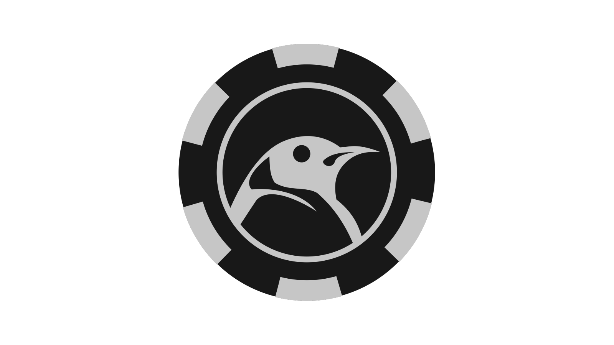
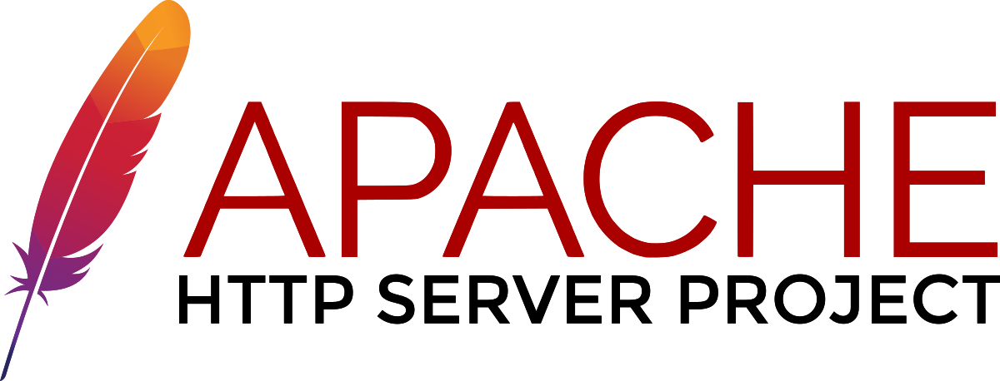

Xavier's Portfolio
Introduction
Background
Showcase

Tuxcoin Gamble is a project created purely for educational purposes. In this project, I explored how cryptocurrencies and blockchains work. I also learned how to interact with the bitcoind daemon's API using jsonrpc. I learned how to make secure account systems with password recovery, 2fa authentication, unbiased slot machine and lottery logic, as well as creating my own authentication API.
Files containing the latest revision of this project have been lost
View this project on github
Technologies used
PHP
PHP was used to handle the backend. It handles many tasks, such as account registration, password recovery, slot machine hash generation, 2fa authentication, and a whole lot more.
MySQL
MySQL was chosen as the database system. It stores information such as password hashes, slot outcome hashes, account information, game information, and a whole lot more
Tuxcoin
Tuxcoin was used as the main currency on the platform to promote the use of cryptocurrency. It allows for quick deposit and withdrawal of funds from user accounts.

Apache Web Server
Apache was chosen as the webserver, making this project a complete LAMP stack.
Highlights
Captcha V2 and 2FA support
Using Google's ReCaptcha V2 and Authenticator app, 2FA support was added, and password brute-forcing attemps are blocked. User accounts have never been more secure!
Total transparency
Users are kept informed about upcoming updates and changes to the site. These are released in the form of informative blog posts on the website.
Quick fund processing
Deposits and withdrawals of the account balance are processed quickly. As the Tuxcoin network only takes about a minute for a block to be mined, transactions go through every minute.
Full-fledged account system
Accounts's security is up-to-standard by salting SHA256-hashed passwords for storage. Password resets can be done by email, as well as the 2FA token, if enabled.